Cada bloco conta
Destruição e construção são sistêmicas. Cobertura é temporária, a trincheira é sua, a ruína é consequência.
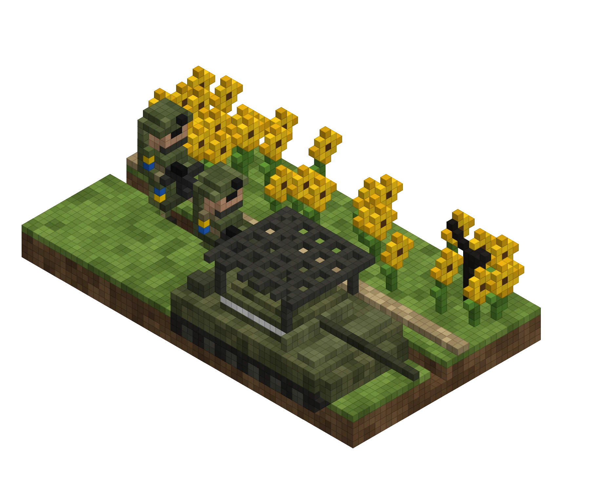
// documento de brainstorm v0.1 · 08 out 2026
Milsim tático no estilo Arma, com o conflito UC × RU como inspiração, num mundo de blocos totalmente destrutível no estilo Minecraft. Cave trincheiras, derrube prédios, pilote drones FPV, e segure a linha.
01 // visão
A tensão de Arma / Squad — balística, rádio, logística, drones — num mundo onde cada bloco pode ser cavado, explodido ou fortificado. A linha de frente não é desenhada pelo level designer: é cavada pelos jogadores.
Destruição e construção são sistêmicas. Cobertura é temporária, a trincheira é sua, a ruína é consequência.
FPV kamikaze, observação, artilharia corrigida e guerra eletrônica: o céu é parte do campo de batalha.
Construir, reviver e atirar custam suprimentos. Quem controla as estradas controla a guerra.
Papéis claros, rádio e cooperação. Um soldado sozinho não segura um setor.
02 // engine
Para um dev que orquestra IA por prompts e deixa a IA criar o código e os modelos, o que pesa é: a IA conseguir ler e escrever tudo (scripts, cenas e modelos), licença sem dor de cabeça e um caminho direto dos modelos voxel para o jogo.
.tscn, recursos .tres e scripts .gd são arquivos legíveis: a IA cria e edita cenas inteiras, não só scripts. É o maior multiplicador para quem trabalha por prompts..vox (abre no MagicaVoxel) e .glb (entra no Godot sem conversão).| Critério | Godot 4 | Unity 6 | Unreal 5 |
|---|---|---|---|
| Licença | MIT, grátis, sem royalties | Grátis até US$ 200 mil/ano, depois Pro | 5% de royalties acima de US$ 1 mi |
| IA edita cenas? | Sim — tudo em texto | Parcial — YAML com GUIDs | Difícil — .uasset binário, Blueprints |
| Voxel | Voxel Tools (Zylann) ou núcleo próprio | Vários assets pagos | Voxel Plugin |
| Multiplayer | Bom; escala grande exige trabalho | Netcode / Fish-Net / Mirror | O melhor para escala grande |
| Estilo de blocos | Ótimo (Forward+, fog volumétrica) | Ótimo (URP) | Exagero para blocos |
| Peso / iteração | Muito leve | Médio | Pesado |
.vox + .glb03 // facções & mundo
O DNA visual e tático vem da guerra moderna no Leste Europeu — fitas de identificação, estepe, girassóis, drones, trincheiras. As facções, o país e os lugares são fictícios: dá liberdade criativa, evita retratar unidades e tragédias reais e simplifica lojas, mídia e classificação indicativa.
inspirada em UC · defensores
Doutrina: mobilidade, drones e emboscadas. Equipamento misto, criativo, muita gambiarra de campo.
Bônus “Enxame”: drones FPV custam −30% de suprimento e recarregam mais rápido.
Identificação: fita amarela + azul nos braços e pernas · camuflagem de manchas
inspirada em RU · atacantes
Doutrina: massa, artilharia e blindagem. Guerra eletrônica forte, ataques em ondas apoiados por fogo pesado.
Bônus “Muralha de aço”: artilharia e jammers custam −30% de suprimento.
Identificação: fita branca + vermelha · camuflagem digital · balaclava
4 km × 2,5 km mostrados · grade de 500 m. Estepe com girassóis e trigo, cinturões de árvores, rio Vorskla com duas pontes, vilas, a cidade industrial de Vorsk e a mina de sal Krystal (túneis). Setores A–E ao longo da linha de frente.
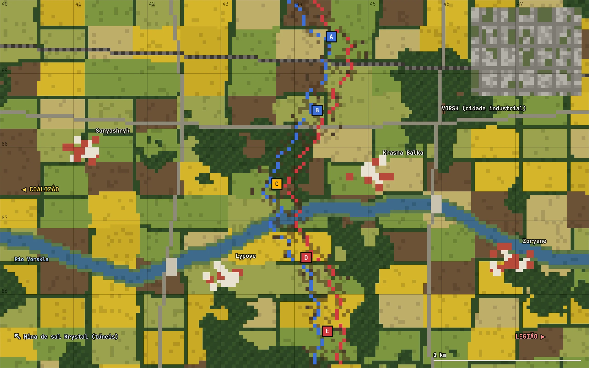
04 // concept art
Geradas por código, com um mini motor voxel isométrico em JavaScript escrito para o projeto (assets/js/voxel.js) — o mesmo jeito que a IA vai gerar os modelos do jogo: voxel escrito como código. Os comentários embaixo são as notas de modelagem.
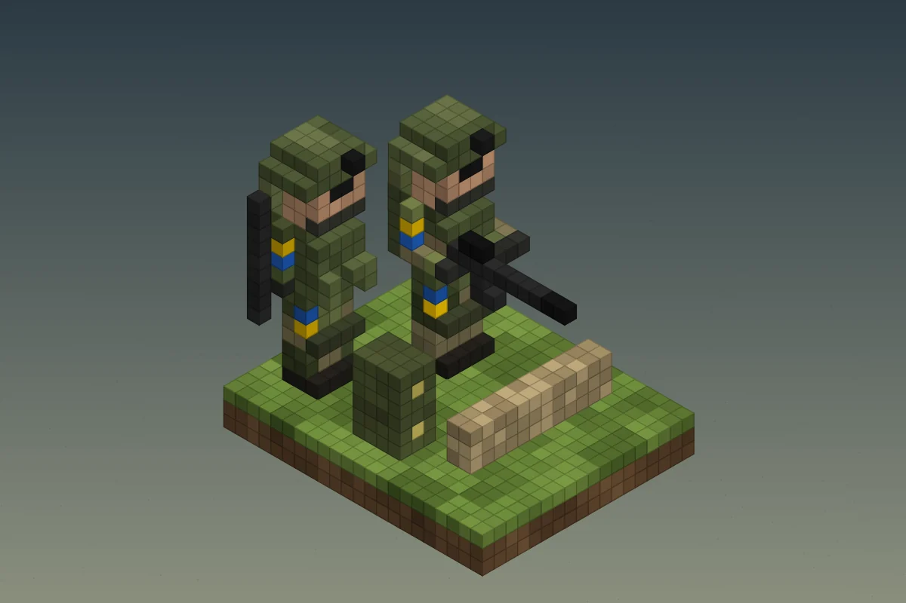
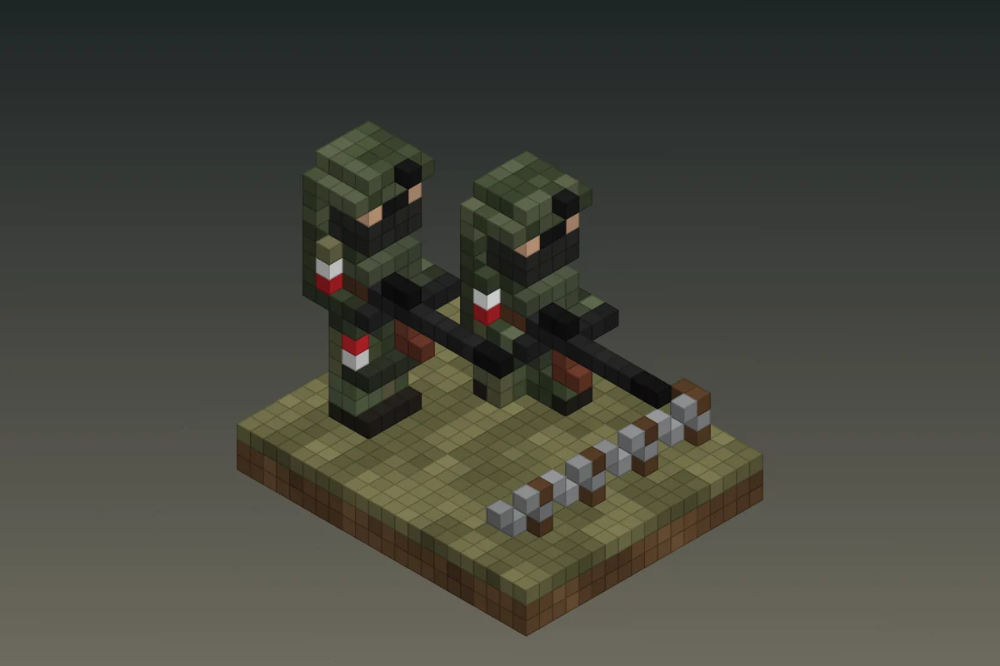
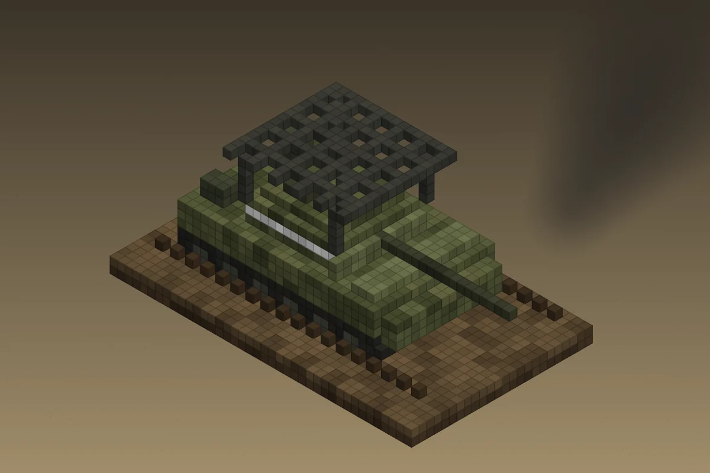
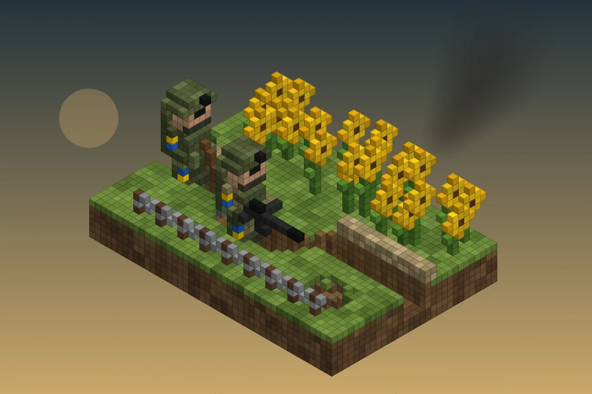
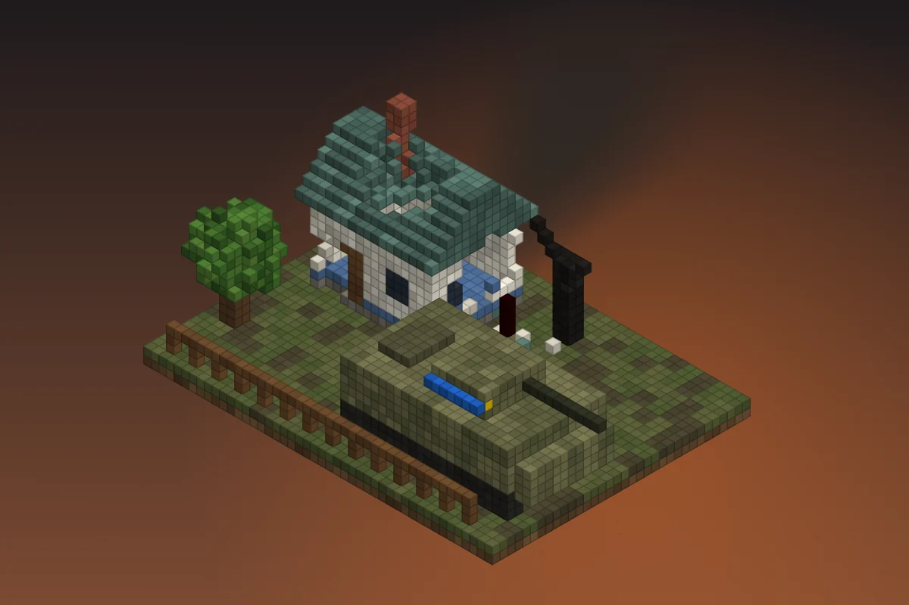
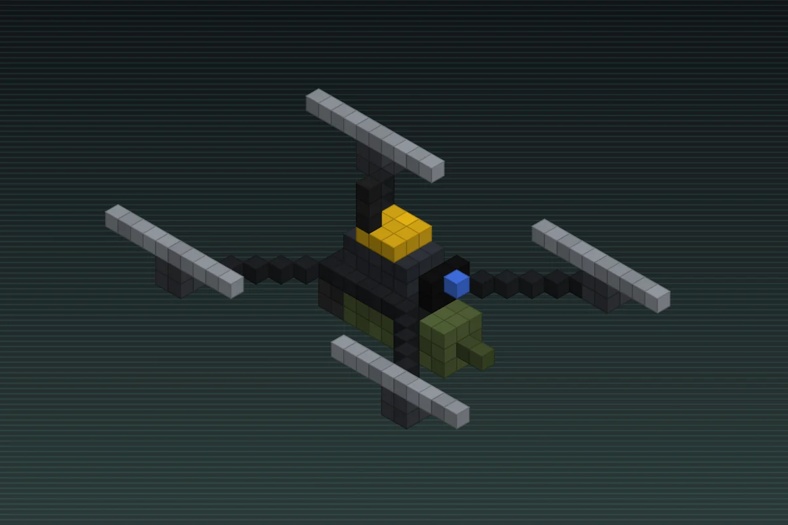
Regra de ouro: camuflagem com 5–6 tons no máximo por facção; cores fortes (fitas, interface) só onde existe informação de jogo.
05 // veículos
38 veículos: 26 terrestres e aquáticos (6 deles civis, que qualquer facção pega nas cidades), 11 aeronaves tripuladas e o drone pesado “Bruxa” (os FPV e os drones de observação são equipamento). Helicópteros são pilotáveis em todos os mapas; os aviões chegam como apoio aéreo chamado pelo comandante nos mapas de 4×4 km e ficam pilotáveis no mapa grande, depois do lançamento.
Cada silhueta é diferente de propósito, para dar para reconhecer de longe ou pela câmera de um drone. A arte é estilizada; as medidas reais para modelar estão na ficha técnica de cada um.
06 // conceitos de gameplay
Um modo principal forte no lançamento (Linha de Frente) e modos menores que reaproveitam os mesmos sistemas.
07 // mecânicas
Cada mecânica tem uma fase: MVP entra no protótipo, Alpha no alpha fechado, Beta antes do Early Access e Pós depois do lançamento.
08 // como ficaria
Loops gerados a partir do código das animações (assets/js/anims.js), mostrando cada mecânica em ação. Cada um também está disponível como .gif para baixar e mandar no Discord ou usar em devlog.
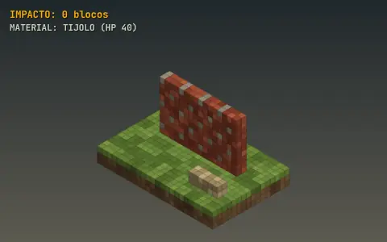
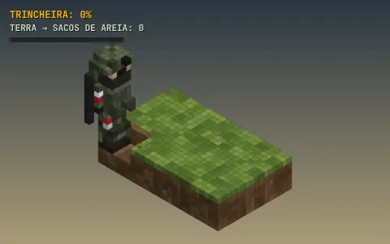
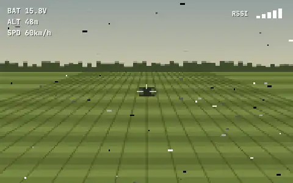
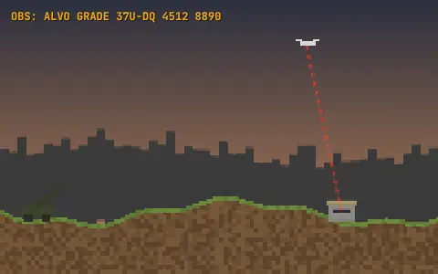
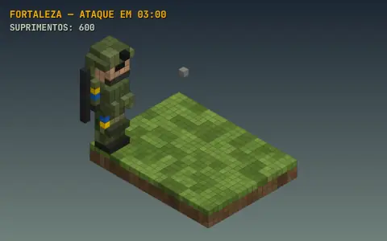
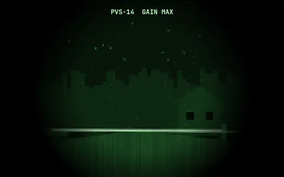
09 // cronograma
≈ 17 meses, começando na segunda-feira 12/10/2026. Considera ~15–20 h por semana suas (orquestrar a IA, revisar o que ela entrega, testar e decidir) — sem modelar à mão, sobra tempo para playtests e comunidade. Com menos tempo, estique as fases proporcionalmente; a ordem continua valendo.
* A data do Steam Next Fest de outubro/2027 depende do calendário da Valve.
Toda semana a IA entrega o código e os modelos voxel que esse código usa; você dirige, testa e aprova.
10 // orquestração
Você é o diretor: decide, escreve os prompts, revisa e aprova. A IA escreve o código e gera todos os modelos voxel (veículos, props, personagens e blocos). O fluxo abaixo mantém a qualidade alta mesmo com tanta coisa gerada.
A IA segue, você aprova. Vira o arquivo docs/estilo-voxel.md do repositório do jogo.
tools/models/; a IA muda o script, nunca o arquivo exportado.vox (MagicaVoxel) e .glb com greedy meshing (Godot) + prévia em PNGweapon_socketturret, canhão gun, rodas wheel_l_01…, rotores rotor_maincategoria_nome_variante (ex.: veh_tank_urso_cage)A IA gera, você aprova a prévia e marca aqui.
As marcações ficam salvas só neste navegador.
Prompts prontos, na ordem do cronograma. Copie, cole no Claude Code dentro do repositório do jogo e ajuste os detalhes.
| Tema | Proposta | Rec. |
|---|